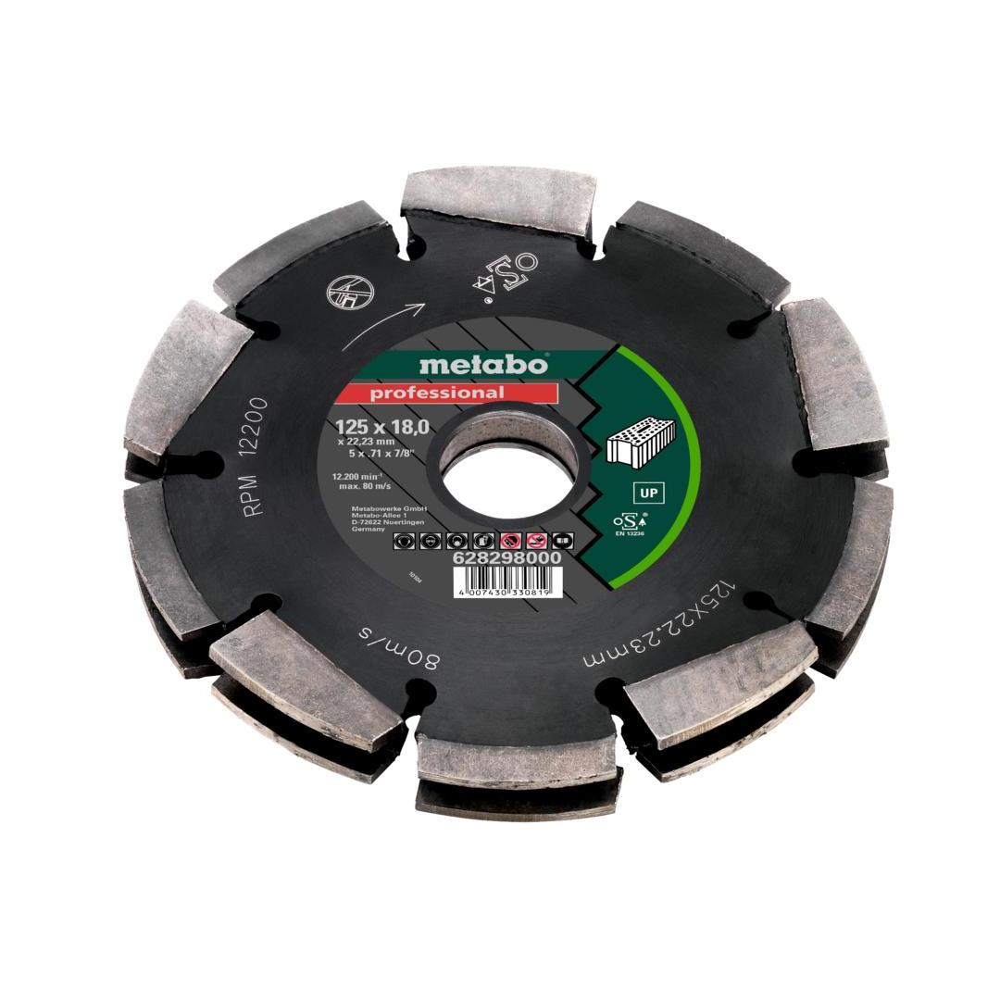
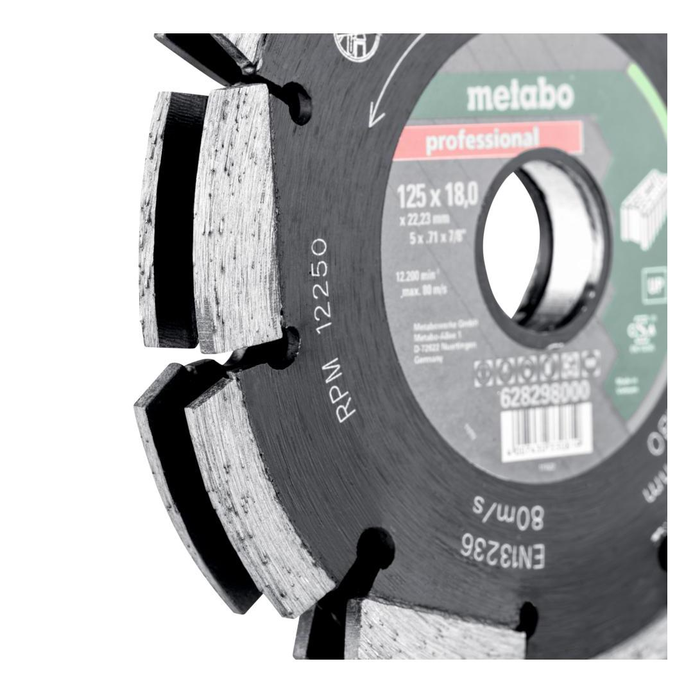
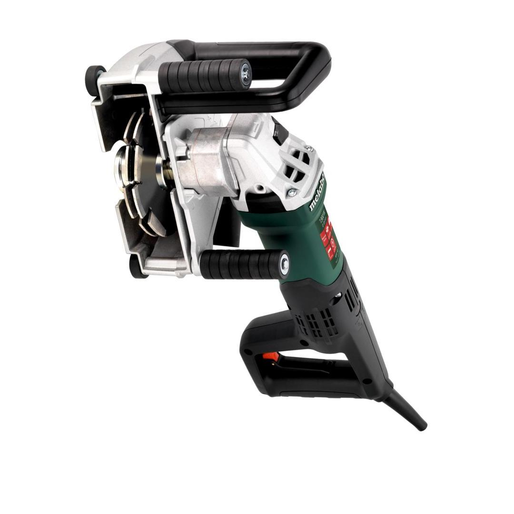
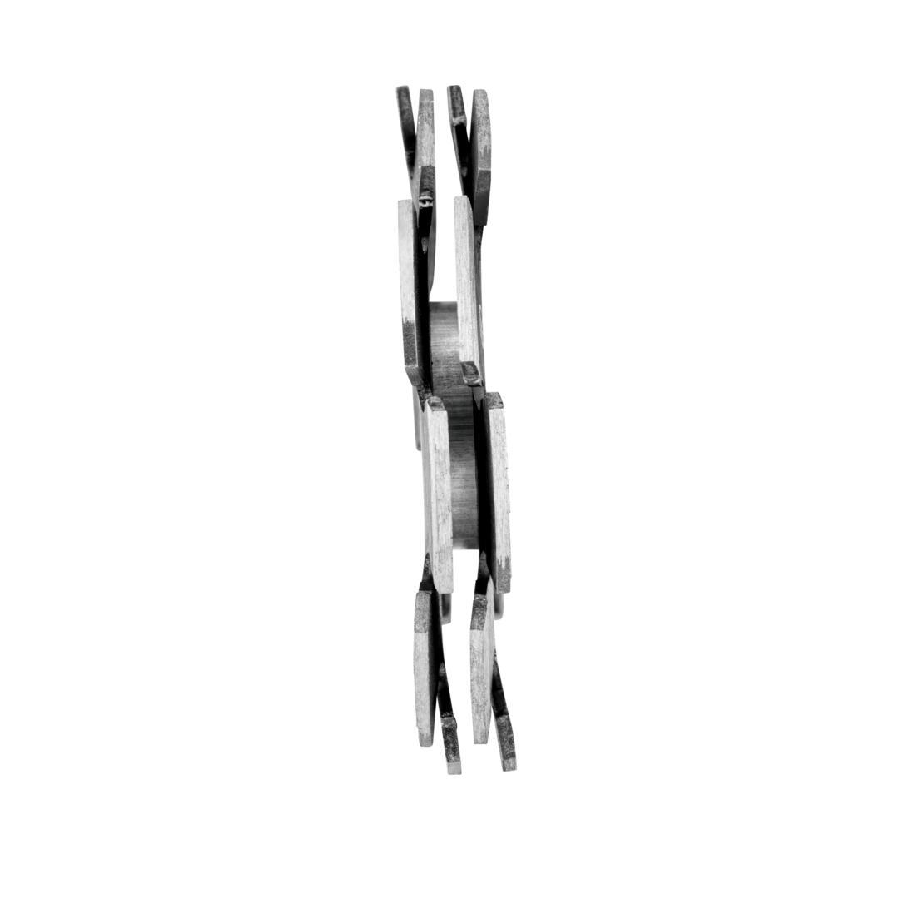

Metabo | Dia-Cd2, 125X18X22.23 Mm Up, Universal
628298000






Product Description
- Fast and comfortable cutting of wall slots in different materials possible
- Highly reduced workload thanks to the intelligent system of interlacing arrangement of segments, since chisseling away of the centre is not required. Great time saving thanks to cutting in one step
- Reduction of dirt and dust, since the material is removed cleanly and completely from the slot
- Customised slots for individual lines, or for Ø 20 and 25 mm-empty pipes. Max. cutting width: 20 mm (2 rows 628298000) / 30 mm (3 rows 628299000)